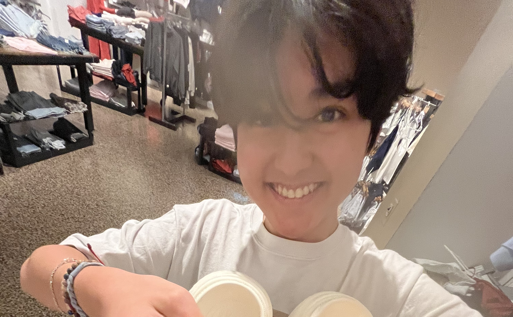

Eli Yoshizaki
Los Angeles Chapter Secretary
Hello I'm Eli Yoshizaki, I'm a sophomore at North Hollywood High School. I joined this nonprofit to take part in spreading awareness about healthcare.
I'm passionate about helping people and making a difference. In my free time, I enjoy hanging out with my friends and family, eating food, playing the violin, and taking strolls around my neighborhood.